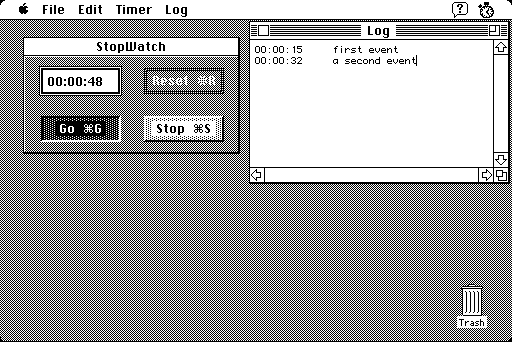

Download
stopwatch1.2.zip (20K) StopWatch 1.2 repackaged into a zipped hfs disk image and checksum file. The disk image can be mounted with Mini vMac.
stopwatch1.2.cpt.hqx (25K) StopWatch 1.2 in the original format.
copyright: NPB (Nicholas P. Buchdahl)
mod date: Aug 13, 1991
license: freeware
"A simple stopwatch utility". Times can be saved to an editable log. It can also function as a count down timer.

As seen in the movie Jurassic Park, around 55 minutes, right after Nedry clicks the big red execute button.
If you find these downloads useful, please consider helping the Gryphel Project, which hosts them.
Here are the md5 checksums for the downloads, signed with Gryphel Key 5:
--------- GRY SIGNED TEXT --------- 62bf705e9464fddbb88f2a02cbab00dd stopwatch1.2.zip 79f03fcde64124ea939dd382d8310bd6 stopwatch1.2.cpt.hqx ------- BEGIN GRY SIGNATURE ------- Gry/4Xa8CFcUzxdN/LpvTBA6qjeW/8g5jyvFJWHhT5HA8t55jguaZh8lO3h1/7TV pM3vqHpPiG4+b8Hi9go5d4V0APreA/d7YrsNFArq5QLwg3msa/noHlPkLfEhPYAo KO19I4/U/snW66IIey4fIttYuWFlFBrdD6IyROixpXY/ltZDRf1/nzDB7VGssWfl -------- END GRY SIGNATURE --------